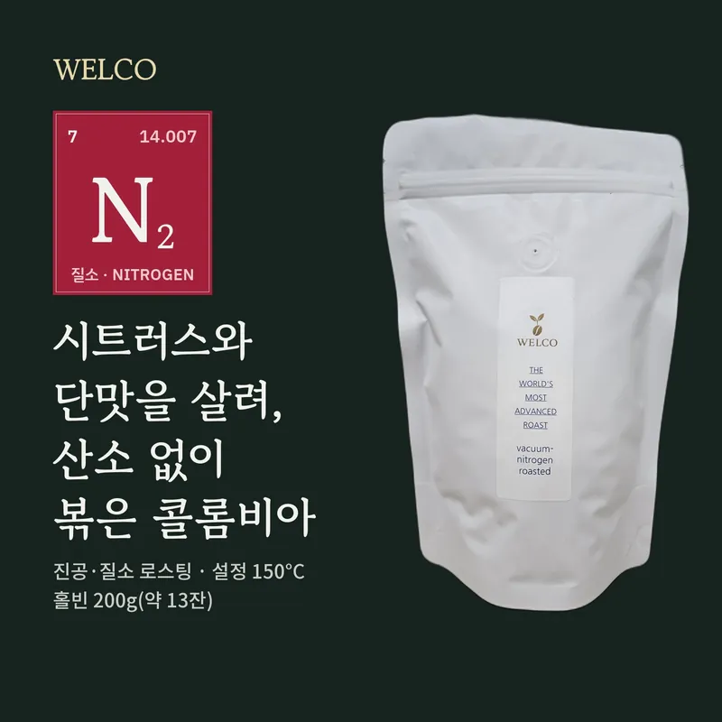

동아프리카 · 시다모 G2 워시드
에티오피아 시다모 G2
자스민 · 레몬·베리 · 홍차
- 산미4
- 단맛3
- 바디2
- 쌉쌀함1
꽃향과 상큼함, 가벼운 블랙커피
세 원두 모두 공기를 빼고 질소를 채운 뒤 설정 150°C로 볶은 홀빈 200g입니다. 남는 차이는 산지의 맛입니다.

모두 홀빈 200g, 같은 로스터, 설정 150°C. 아래 맛 세기는 WELCO가 볶을 때 맞춘 목표값(5단계)입니다.
세 원두의 맛 세기 비교 — 가장 강한 항목이 원두마다 다릅니다
맛 세기 5단계 · 가장 강한 항목을 짙게 표시
동아프리카 · 시다모 G2 워시드
자스민 · 레몬·베리 · 홍차
꽃향과 상큼함, 가벼운 블랙커피

동아프리카 · 키암부·무랑가 AA FAQ 워시드
자몽·포도 · 황설탕·아몬드
밝은 산미와 고소한 단맛을 함께

남아메리카 · 후일라 수프리모 17/18 워시드
시트러스 · 사탕수수 · 밀크 초콜릿
단맛이 앞에 오는 한 잔, 라떼까지
세 원두는 산지 · 등급 · 가공이 다르고, 볶는 곳 · 공정 · 용량은 같습니다
쿠팡 상세와 생두 구입처 사양서 기준 · 확인하지 못한 항목은 ‘표기 없음’
| 항목 | 에티오피아 | 케냐 AA | 콜롬비아 |
|---|---|---|---|
| 산지 · 등급 | 에티오피아 남부 시다모 · G2 | 케냐 중부 키암부 · 무랑가 · AA FAQ(스크린 18/19) | 콜롬비아 후일라 · 수프리모 17/18 |
| 재배 고도 | 해발 1,500~2,200m 고원 | 해발 1,400m | 해발 1,800~2,200m |
| 가공 | 워시드 — 물로 씻어 말림 | 워시드 — 물로 씻어 말림 | 워시드 — 물로 씻어 말림 |
| 품종 | 표기 없음 | SL28 · SL34 | 카투라 · 카스티요 |
| 생두 구입처 | 지에스씨인터내셔날(GSC) | 맥널티인터내셔널 | 맥널티인터내셔널 |
| 향미 노트 | 자스민 · 레몬·베리 · 꿀 · 홍차 | 자몽·포도 · 황설탕 · 아몬드·군밤 | 시트러스 · 사탕수수 · 밀크 초콜릿 |
| 노트 기준 | WELCO가 볶을 때 맞춘 맛 목표 | WELCO 테이스팅 노트 | 커핑 노트 |
| 로스팅 | 경상북도 고령 WELCO 로스터리 · 진공 0~8분 → 질소 8~12분 · 설정 150°C | ||
| 형태 · 용량 | 홀빈(통원두) 200g · 그라인더 필요 · 핸드드립 약 13잔 | ||
| 포장 | 지퍼 · 원형 밸브 파우치 | ||
| 잘 맞는 추출 | 핸드드립 · 아이스 | 핸드드립 · 아이스 | 핸드드립 · 아이스 · 라떼 |
| 아크릴아마이드 시험 | 하지 않음 | 시료 1건 불검출(성적서 RT25B-S0676) · 다른 로트는 시험하지 않음 | 하지 않음 |
| 나노버블 발아 | 세 원두 모두 적용하지 않음(개발 중) | ||
해발 1,500~2,200m 시다모 고원 · 물로 씻어 말린 워시드
산미 4는 신맛보다 레몬·베리 같은 상큼함에 가깝게 맞췄습니다.
산미가 걱정된다면 물 온도를 조금 높여 내려 보세요.
| 핸드드립 | 중간 분쇄 · 15g · 240ml92°C · 뜸 30초 후 3~4회 나눠 붓기 · 약 2분 30초 |
|---|---|
| 아이스 | 조금 곱게 · 20g · 160ml뜨거운 물로 내려 얼음잔에 바로 |
| 콜드브루 | 굵게 · 50g · 500ml찬물 · 냉장 12~24시간 |
시게 느껴지면 조금 더 곱게 갈거나 물 온도를 조금 올려 보세요.
AA는 케냐 생두의 콩 크기 등급입니다
산미·단맛·바디를 고르게 맞춰, 밝은 산미와 고소함이 함께 느껴집니다.
산미가 걱정된다면 물 온도를 조금 높여 내려 보세요.
| 핸드드립 | 중간 분쇄 · 15g · 240ml90~93°C · 약 2분 30초~3분 |
|---|---|
| 아이스 | 조금 곱게 · 20g · 160ml뜨거운 물로 내려 얼음잔에 바로 |
| 콜드브루 | 굵게 · 50g · 500ml찬물 · 냉장 12~24시간 |
시게 느껴지면 조금 더 곱게 갈거나 물 온도를 조금 올려 보세요.
케냐 AA 쿠팡 상품평은 385개, 별점 평균 4.5입니다
쿠팡 구매 후기 원문 · 이름 일부 가림
★★★★★“원래 케냐를 즐기진 않았는데 회사에 산미커피를 싫어하는 사람이 생겨서 절충하느라 에티오피아에서 케냐로 바꾸었어요 고소한걸 좋아하는 사람이 생겨서 브라질을 삿다가 산미를 좋아하는 사람들이 또 불만이 생겨서 절충을 위해 고른건데 다들 맘에 든다고 해서 정말 다행이에요 산미를 떠나서 커피 맛 자체도 좋아요 맛있어요! 이거로 계속 구매를 하게될것 같네요”
엄*하 · 2026. 2. 4. · 쿠팡 구매 후기, 케냐 AA
후일라 · 수프리모 17/18 · 물로 씻어 말린 워시드
단맛 4 — 사탕수수 같은 단맛이 가장 앞에 오도록 맞췄습니다.
산미가 걱정된다면 물 온도를 조금 높여 내려 보세요.
| 핸드드립 | 중간 분쇄 · 15g · 240ml90~93°C · 약 2분 30초~3분 |
|---|---|
| 아이스 | 조금 곱게 · 20g · 160ml뜨거운 물로 내려 얼음잔에 바로 |
| 콜드브루 | 굵게 · 50g · 500ml찬물 · 냉장 12~24시간 |
시게 느껴지면 조금 더 곱게 갈거나 물 온도를 조금 올려 보세요.
추출 기준은 일반적인 예시이며 취향에 맞게 조절하세요. 산미는 개인차가 큰 영역입니다.
분쇄는 콜드브루 굵게, 핸드드립 중간, 모카포트 곱게입니다
세 원두 공통 · 아이스(뜨거운 물로 내려 얼음잔에)는 ‘조금 곱게’
200g 한 봉은 핸드드립 약 13잔, 하루 한 잔이면 약 2주입니다
| 포장 | 지퍼 · 원형 밸브 파우치라 개봉 후 다시 닫아 둘 수 있습니다. |
|---|---|
| 개봉 후 | 지퍼를 닫아 서늘하고 그늘진 곳에 두세요. |
| 오래 둘 때 | 한 번 쓸 만큼 나눠 밀폐해 냉동 보관하고, 꺼낸 원두는 다시 얼리지 마세요. |
| 소비기한 | 포장 표기를 확인해 주세요. |
| 구매 전 확인 | 홀빈이라 그라인더가 필요합니다. 선물이라면 받는 분의 그라인더 유무를 먼저 확인하세요. |
공기 속에서 볶으면 산소 때문에 불완전 연소가 일어나 원두 껍질이 그을릴 수 있고, 그을음은 커피 향을 가릴 수 있습니다. 그래서 WELCO는 먼저 공기를 빼고(진공 0~8분), 질소를 채운 뒤(질소 8~12분) 볶습니다.
차이는 볶는 통 안에 산소가 있느냐 없느냐입니다
산소그을음질소
12분 공정 중 앞 8분은 공기를 빼고, 뒤 4분은 질소 속에서 볶습니다
특허의 핵심은 산소가 없는 질소 분위기에서 볶는 것입니다. 특허 명세서는 무산소 상태에서는 공기 중 불완전 연소로 생기는 탄화물(그을음)이 생성되지 않는다고 설명합니다.
질소를 채우기 전에 공기를 먼저 빼는 진공 0~8분 단계, 그리고 설정 150°C는 WELCO가 정한 공정 값입니다. 특허 범위가 아니라 우리 로스터리의 운영 방식입니다.
특허 명세서는 무산소 상태에서 탄화물이 생성되지 않는다고 설명합니다.
산지의 꽃 · 과일 향이 열에 가려지지 않게 낮춘 설정입니다.
같은 진공·질소 · 설정 150°C 공정으로 볶은 WELCO 케냐 AA 원두를 시험한 결과입니다. 에티오피아 · 콜롬비아 원두의 별도 시험은 아닙니다. 한국인터텍테스팅서비스 · 성적서 RT25B-S0676 · 2025. 9. 10.
출처: 불완전 연소 · 탄화물 · 온도 범위는 특허청 등록특허 제10-2004953호 명세서, 진공 · 질소 시간과 150°C 설정은 WELCO 로스팅 공정.

경상북도 고령에 있는 WELCO 로스터리의 진공·질소 로스터입니다. 세 원두 모두 이 설비에서 같은 순서로 볶습니다. 산소는 빼고, 온도는 낮추고, 산지의 향은 살리려 합니다.
| 1단계 | 진공 구간 0~8분 — 공기를 빼냅니다 |
|---|---|
| 2단계 | 질소 구간 8~12분 — 질소를 채워 볶습니다 |
| 설정 온도 | 150°C |
| 로스터리 | 경상북도 고령 · 주식회사 디올(브랜드 WELCO) |
생산 중 제어 화면의 설정값은 150°C이고, 진공 · 질소를 차례로 넣습니다

공개하는 근거는 둘이고, 각각 범위가 정해져 있습니다
제10-2004953호
곡물 로스팅장치 및 곡물의 로스팅 방법
2019. 7. 23. 등록 · 특허권자 주식회사 디올
질소 · 무산소 분위기 로스팅
케냐 AA 시료 기준
한국인터텍테스팅서비스(식약처 지정 시험기관)
성적서 RT25B-S0676 · 2025. 9. 10.

| 특허의 범위 | 질소로 산소를 없앤 분위기에서 볶는 장치와 방법. 진공 단계와 150°C 설정은 특허가 아닌 WELCO 자체 공정입니다 |
|---|---|
| 시험의 범위 | 같은 공정으로 볶은 WELCO 케냐 AA 원두 시료의 결과입니다. 에티오피아 · 콜롬비아 원두를 따로 시험한 것은 아닙니다 |
| WELCO | 주식회사 디올의 원두 브랜드이며, 특허권자도 주식회사 디올입니다 |
시험 결과는 의뢰한 해당 시료에 한하며, 다른 원두나 다른 회사 제품과의 비교를 뜻하지 않습니다.
세 원두 모두 쿠팡에서 팝니다 — 에티오피아 · 케냐 AA · 콜롬비아. 케냐 AA는 네이버 스마트스토어에서도 살 수 있습니다. 가격과 배송은 각 판매 페이지에서 확인해 주세요.
홀빈(통원두) 상품이라 분쇄가 필요합니다. 분쇄된 가루는 판매하지 않습니다.
꽃향과 상큼함, 가벼운 블랙커피라면 에티오피아. 밝은 산미와 고소한 단맛을 함께 원하면 케냐 AA. 단맛이 앞에 오는 한 잔이나 라떼까지 생각하면 콜롬비아입니다. 같은 공법으로 볶았으니 나란히 마셔 보면 산지의 차이가 잘 드러납니다.
아닙니다. 등록특허 제10-2004953호는 질소로 산소를 없앤 분위기에서 볶는 방법입니다. 질소를 채우기 전에 공기를 빼는 진공 단계(0~8분)와 설정 150°C는 WELCO가 정한 자체 공정입니다.
아닙니다. 같은 진공·질소 · 설정 150°C 공정으로 볶은 WELCO 케냐 AA 원두 시료를 시험했고, 결과는 불검출이었습니다(한국인터텍테스팅서비스, 성적서 RT25B-S0676, 2025. 9. 10.). 에티오피아 · 콜롬비아 원두의 별도 시험은 아닙니다.
받으시는 분께 그라인더가 있는지 먼저 확인해 주세요. 어떤 맛을 좋아하는 분인지는 위의 ‘취향 확인’으로 가늠해 보세요.
한 번 쓸 만큼 나눠 밀폐해 냉동 보관하고, 꺼낸 원두는 다시 얼리지 마세요. 평소에는 지퍼를 닫아 서늘하고 그늘진 곳에 두면 됩니다. 소비기한은 포장 표기를 확인해 주세요.
원두 샘플 · 납품은 첫 화면 맨 아래 문의로 연락 주세요.
원두를 직접 볶고 파는 WELCO가 네이버 블로그에 쓴 일곱 편의 연재입니다.
가격 · 배송 · 결제는 쿠팡 판매 페이지에 있습니다. 궁금한 점은 이메일이나 전화로 물어보셔도 됩니다.
문의 leeseunghun815@gmail.com · 전화 070-7700-7891 · 카페 원두 샘플 · 납품 문의는 여기